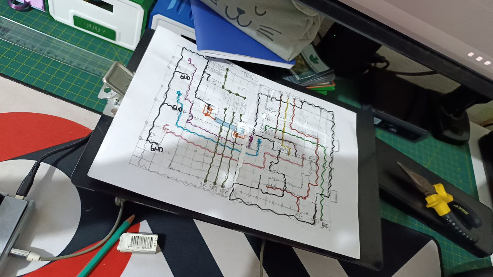
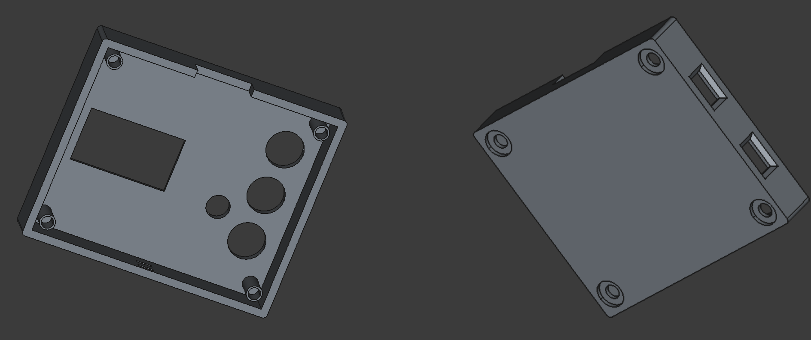

WifiCom
Meu amigo Lucas me iniciou no mundo dos V-Pets de Digimon, me emprestando um DM20 para brincar.

A ideia era fazer um WifiCom, que é um dispositivo físico que utiliza uma Raspberry Pi Pico W e alguns componentes eletrônicos (tela OLED, botões, buzzer) para conectar com o V-Pet em aplicações online, como o w0rld.
Claramente fiquei super animada em construir um WifiCom, dado que poderia aprimorar minhas habilidades de montagem de circuitos, além de modelagem 3D para fazer o case.
Montagem e configuração
O primeiro passo foi montar o circuito na protoboard. No site do WifiCom tem o esquemático do circuito com diversos módulos. No caso do DM20, utilizei apenas o módulo de "prongs" (metais no topo do V-Pet usados para a comunicação). A montagem foi bem simples, dado que o circuito não é muito complexo.
Após montar o circuito, é preciso configurar o firmware na placa. Primeiramente instalei o CircuitPython 9.2.8 na Raspberry Pi Pico W. Em seguida, usei o script wificom-update-tool para instalar o firwmare do WifiCom no dispositivo.
O último passo foi editar o arquivo de configuração (secrets.json). É nesse arquivo que fica o SSID e a senha da rede WiFi, além das chaves de acesso do WifiCom (disponíveis na dashboard, após criar uma conta).
Chegou a hora de testar o circuito: conectei os jumpers nos "prongs" do V-Pet, invoquei meu Agumon dentro do w0rld, e funcionou!

Planejando a placa do circuito
Meu plano era transferir o circuito para uma placa para circuito impresso perfurada dupla face. Foi a minha primeira vez fazendo isso, e logo de cara percebi o desafio que seria encaixar todos os componentes de forma compacta.
Passei vários dias planejando como ficaria o circuito, desenhando no papel as trilhas e o posicionamento dos componentes.

Finalmente me dei por vencida e decidir fazer um circuito modular: uma placa para os botões e outra para o módulo de "prongs". Os demais componentes ficariam fixos ao case.
Cortei a placa e soldei os componentes, deixando os fios no tamanho exato para encaixar certinho. Fiz o teste do circuito e tudo estava funcionando corretamente.

Modelando o case
Desde que comprei a impressora 3D, meu objetivo era aprender a modelar usando o FreeCAD, e recentemente comecei a trabalhar nisso. Esse projeto foi a primeira oportunidade de colocar meus conhecimentos novos em prática.
Modelei um case com duas partes, que se fixam com parafusos M3. Cortei buracos para a tela OLED, o LED e os botões, além das portas USB da Raspberry Pi Pico W e do circuito de carga da bateria. Adicionei também uma chave liga-desliga na parte de baixo, e o encaixe para o circuito de "prongs" na parte de cima.

Não acertei as dimensões de primeira, foram algumas tentativas e erros até chegar na peça final. Esqueci de adicionar um furo para o pino do V-Pet, tive que fazer um manulmente.
Resultado final
Com o circuito finalizado, restava apenas decidir o que utilizar para fazer o contato do circuito de "prongs". Minha primeira tentativa foi colocar dois parafusos, pois não encontrei a fita de níquel que vi sendo recomendada por outras pessoas que construíram o projeto. Mas depois de muita busca, consegui comprar como "fita para solda de baterial 18650". O acabamento ficou bem melhor com a fita de níquel.

Por fim, o WifiCom junto com o V-Pet. O tamanho ficou similar, sendo fácil de conectar os dois.

Esse foi um dos projetos mais completos que já fiz, dado que envolveu desde a confecção do circuito à modelagem do case. Fiquei bem feliz com o resultado!